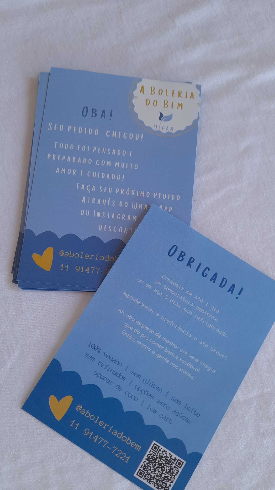

Para pedidos e delivery
Ideal para acompanhar entregas, pedidos e embalagens com uma mensagem de agradecimento personalizada.
Acompanhe seus pedidos com um panfleto personalizado de agradecimento e QR Code. É uma forma prática de reforçar a identidade da marca, facilitar o contato e direcionar o cliente para o canal que você escolher.

O panfleto pode acompanhar entregas e embalagens para agradecer a compra, apresentar um QR Code e facilitar o próximo contato com a marca.
Ideal para acompanhar entregas, pedidos e embalagens com uma mensagem de agradecimento personalizada.
Direcione o cliente para Instagram, catálogo, avaliação, cardápio ou outro link definido na sua arte.
Personalize cores, logotipo, mensagem e informações de contato para manter a comunicação alinhada ao seu negócio.
Envie sua arte, referência, logotipo, mensagem e o link que será usado no QR Code pelo WhatsApp. Confirmamos material, quantidade, prazo e valor antes da produção.
Envie sua referência ou arte e solicite um orçamento personalizado.